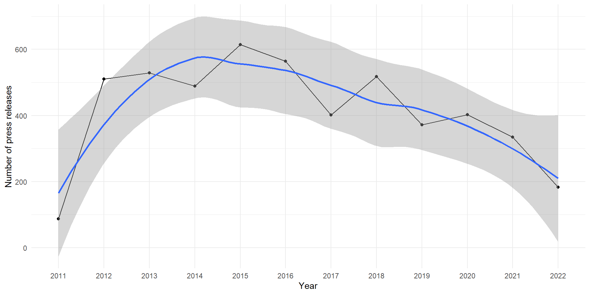
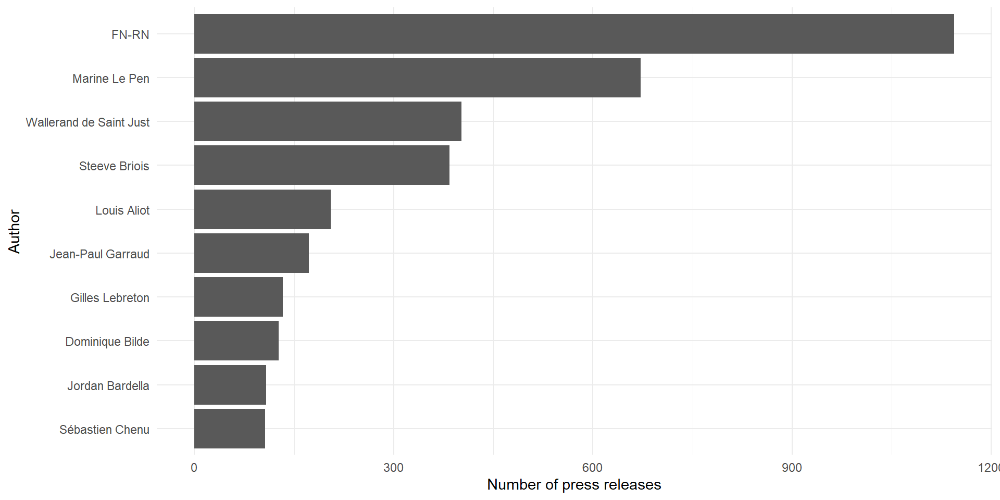

Collecting data from the web
A short introduction to webscraping
Malo Jan
2023-02-06
Outline
An introduction to data collection from the web.
- Goals and uses of web data collection
- Demo on R
Why collecting data from the internet ?
Increasing amount of digital data : create new opportunities for social science research
- Digitalized data (data on the web) :
- Open data practices from administrations/parliaments etc.
- Archive data digitalized
- Digital data (data from the web):
- Social networks : twitter, tiktok, even dating app
- Digital traces :
- What we query, what we click on, what we publish/share
- We all publish, share stuffs on the web, the actors/institutions you are studing too
Why collecting data from the internet ?
Basically every content from a webpage might be data for social science research that can be collected
- What makes these data different from the one we usually use in social science ?
- From structured to unstructured data
- From sample to population ? Small to big data ?
- No intervention from the researcher
- Which form ?
- A lot of text
- A lot of social interactions, networks, links
Where collecting data from the internet ?
- Where are these data ?
- Open data : can be download
- API (Application Programming Interface): ex Twitter API, New York Times or Guardian API
- webpages
- To exploit these data we need :
- Ways to gather automatically
- To formate, to reshape potentially unstructured data
What is webscraping ?
Web scraping refers to the practice of automatically extracting content from webpages.
We are all “manual scrapers” : copying/pasting/downloading things from the internet everyday
Let’s automate all of that by our computer : machines are faster and more scalable than us
Why webscraping ?
- Example of what you could do with webscraping :
- Get data from social media or wikipedia
- Download and parse all the press releases of the organization your are studying
- Download automatically and store every pdfs you want from a website
- Not only “quant” thing : it’s only about data collection, not analysis
- Can help you store, download documents that you can analyze in a qualitative fashion
- Even though, beacause it is easily scalable, you usually have a lot of data, suitable for quantification
- BUT requires some programming skills making it easy to :
- Reproduce
- Update
- Scale
How is the web written ?
Webscraping involves understanding how the web is written : what is a webpage?
- Code : interpreted by a browser (eg. Chrome, Mozilla)
A web page may be :
- HTML (Hypertext markup language) : structure and content
- CSS : style (ex : font, color)
- Javascript : functionalities, dynamic content
Let’s look at the CEE researchers’ page
HTML
- Markup language
- Web content written in tags
- Elements, attributes, text
- Tree-like structure
- Sraping consists of extracting the content of html code source to get specific information

Ethics in webscraping
Ethics about how we access the data
- Web scraping is usually illegal :
- Access of private data, server overload
- Websites can block you/follow you
- Good practices :
- API first
- Check for permissions (robot.txt)
- Slow down the scraping pace
- But evolution of the regulation
Ethics about how we use the data
- Usually info on specific individuals : GDPR
- Data on you (so with identifying information) is easily accessible :
- I could download all your tweets in two lines of code
- Need to reflect on data use

Other challenges in webscraping
Complex and moving pages
Pages are sometimes complex/dynamics, use javascript
Require other scraping strategies and the use of Selenium
Allows you to simulate clicks on a browser from R or Python
Web pages are changed/updated ! Your programm may work one day and not the other day : good practice to download the pages on your computer
Post-API age ? What is available today may be not available tomorrow : FB 2018, Twitter today

Dirty data
How do you extract and automate all of this ?
- A software : R (packages : rvest, httr, Rselenium) or Python (BeautifoulSoup)
- Write a programm to request specific information to webpages
- Informations on the website you want to scrape
- The url(s) of the page(s) you want to scrape
- The html tags/css selectors locating the information you want
- Different worklow/strategy :
- One vs many pages
- Static vs dynamics pages
Demo in Rstudio
Scraping with Rstudio
- Rather than point and click : program a scraper - Rstudio, package rvest : read and parse html elements
Main functions
Let’s have fun scraping the National Rally website
Research interest : the communication of the RN - How does the party communicate ? On what topics ?
Data collection : Press releases of the party - One of the means used by political parties to communicate
Step 1 : Familiarize yourself with the website
- RN website
- Where are the press releases ? How are the urls structured ? What kind of information do you have ?
Step 2 : Extract information from 1 press release (easy)
Step 2 : Extraction from 1 press release
Find the selectors
# Get title
title <- page_html |>
html_element("div.px-6 > h1:nth-child(1)") |>
html_text2()
# Get author
author <- page_html |>
html_element("div.flex-col:nth-child(2) > div:nth-child(1) > h4:nth-child(1)") |>
html_text2()
# Get date
date <- page_html |>
html_element("div.flex-col:nth-child(2) > p:nth-child(2)") |>
html_text2() |>
# Convert to date format
lubridate::dmy()
# Get text
text <- page_html |>
html_element(".text-justify") |>
html_text2()
# Combine everything in a single dataframe
(cp <- tibble::tibble(title, author, date, text))
## # A tibble: 1 × 4
## title author date text
## <chr> <chr> <date> <chr>
## 1 Communiqué COP27 Catherine Griset 2022-11-23 "Communiqué de Mme Catherine Griset, députée française de la délégation RN au Parlement européen, membre de la commission de l’environnement, de la sant…Step 3 : get the urls of all pages
Usually, we want more than one (and here really comes the fun and beauty of automation !)
Static pages, many urls but structured in a logical way (easier for us) :
- https://rassemblementnational.fr/communiques?page=2
- https://rassemblementnational.fr/communiques?page=3
- https://rassemblementnational.fr/communiques?page=500
Here, the workflow would be the following :
- Identify the urls of all the pages where there are press releases (around 570)
- For each of these urls : collect the urls of each press releases (10x570)
- For each press release : extract title, author, date and text
Step 3 : get the urls of all pages
urls <- stringr::str_c(
"https://rassemblementnational.fr/communiques/?page=", 1:570)
urls |> head(2) # Display 2 first urls[1] "https://rassemblementnational.fr/communiques/?page=1"
[2] "https://rassemblementnational.fr/communiques/?page=2"[1] "https://rassemblementnational.fr/communiques/?page=569"
[2] "https://rassemblementnational.fr/communiques/?page=570"Step 4 : get the urls of all press releases
From each of the website urls, we want unique url of each press release (10 per page)
page <- "https://rassemblementnational.fr/communiques/?page=569"
page |>
read_html() |>
html_elements("a.delay-50") |>
html_attr('href') |>
head(4)
[1] "https://rassemblementnational.fr/communiques/pour-lavenir-de-mayotte-marine-le-pen-presidente"
[2] "https://rassemblementnational.fr/communiques/g20-et-crise-de-euro-silence-radio-au-ps"
[3] "https://rassemblementnational.fr/communiques/referendum-grec-sarkozy-exprime-sa-haine-de-la-democratie"
[4] "https://rassemblementnational.fr/communiques/communique-de-presse-de-louis-aliot-vice-president-du-front-national"get_links <- function(x) {
page <- read_html(x)
link <- html_elements(page, "a.delay-50") |>
html_attr('href')
return(link)
}
# Ex : Collect the press releases urls for 3 pages
(pages <- purrr::map(urls[1:3], get_links) |> unlist()) [1] "https://rassemblementnational.fr/communiques/le-depute-jean-francois-jalkh-gagne-son-proces-contre-le-monde-et-la-croix"
[2] "https://rassemblementnational.fr/communiques/refus-des-deputes-macronistes-au-parlement-europeen-de-debattre-de-la-menace-terroriste-en-europe"
[3] "https://rassemblementnational.fr/communiques/communique-de-presse-dandre-rouge-depute-francais-au-parlement-europeen-delegue-national-de-loutre-mer-du-rassemblement-national-2"
[4] "https://rassemblementnational.fr/communiques/mepris-envers-les-collectivites-yoann-gillet-demande-des-comptes-au-gouvernement-2"
[5] "https://rassemblementnational.fr/communiques/pour-linterdiction-de-lexportation-danimaux-vivants-hors-de-lunion-europeenne"
[6] "https://rassemblementnational.fr/communiques/premier-echec-pour-la-reforme-des-retraites-la-commission-defense-emet-un-avis-defavorable"
[7] "https://rassemblementnational.fr/communiques/mepris-envers-les-collectivites-yoann-gillet-demande-des-comptes-au-gouvernement"
[8] "https://rassemblementnational.fr/communiques/statue-de-la-vierge-sur-lile-de-re-cest-la-gauche-quil-faut-deboulonner"
[9] "https://rassemblementnational.fr/communiques/annulation-de-la-suspension-dun-soignant-en-guadeloupe-une-decision-de-bon-augure-mais-insuffisante"
[10] "https://rassemblementnational.fr/communiques/presque-1-million-de-demandeurs-dasile-dans-lunion-europeenne-en-2022-stop"
[11] "https://rassemblementnational.fr/communiques/campagne-de-communication-anti-immigration-la-france-doit-sinspirer-de-la-suede"
[12] "https://rassemblementnational.fr/communiques/54107"
[13] "https://rassemblementnational.fr/communiques/la-reponse-de-madame-le-ministre-colonna-a-mon-courrier-entre-mensonges-perseverance-dans-lerreur-et-mepris-de-la-population-mahoraise"
[14] "https://rassemblementnational.fr/communiques/alerte-rouge-pour-les-betteraviers-francais"
[15] "https://rassemblementnational.fr/communiques/la-commission-europeenne-reconnait-que-frontex-na-pas-refoule-illegalement-de-migrants"
[16] "https://rassemblementnational.fr/communiques/communique-de-presse-dandre-rouge-depute-francais-au-parlement-europeen-delegue-national-de-loutre-mer-du-rassemblement-national"
[17] "https://rassemblementnational.fr/communiques/super-dividendes-des-societes-dautoroutes-le-rapport-qui-donne-raison-au-rassemblement-national-on-vole-les-francais-depuis-des-annees"
[18] "https://rassemblementnational.fr/communiques/rejet-dun-projet-de-loi-qui-vise-a-transformer-un-peu-plus-la-france-en-une-province-de-lue"
[19] "https://rassemblementnational.fr/communiques/reforme-des-retraites-depot-dune-motion-referendaire-par-les-deputes-du-groupe-rn-pour-rendre-aux-francais-le-choix-de-leur-modele-social"
[20] "https://rassemblementnational.fr/communiques/communique-danne-sophie-frigout"
[21] "https://rassemblementnational.fr/communiques/pres-dun-tiers-des-jeunes-antillais-en-desherence-le-gouvernement-ne-peut-laisser-tomber-sa-jeunesse"
[22] "https://rassemblementnational.fr/communiques/le-qatargate-un-scandale-qui-secoue-le-parlement-europeen"
[23] "https://rassemblementnational.fr/communiques/la-consommation-dinsectes-au-menu-de-la-commission-europeenne"
[24] "https://rassemblementnational.fr/communiques/la-chasse-aux-marmottes-un-declin-evitable"
[25] "https://rassemblementnational.fr/communiques/arrivee-de-migrants-sri-lankais-a-la-reunion-des-arrivees-de-plus-en-plus-regulieres-et-de-plus-en-plus-importantes"
[26] "https://rassemblementnational.fr/communiques/reaction-du-depute-laurent-jacobelli-aux-voeux-du-president-de-la-republique-aux-armees"
[27] "https://rassemblementnational.fr/communiques/le-snu-des-debuts-difficiles" Step 5 : Wrap everything
Now we want extract the content of each press release : for this we create a function based on Step 2
# Write a function to scrap everything
get_content <- function(x) {
# Get html code of page
page <- read_html(x)
# Create dataframe with the different elements
cp <- tibble::tibble(
# Extract title
title = html_element(page, "h1") |>
html_text(),
# Extract author
author = html_element(
page,
"div.flex-col:nth-child(2) > div:nth-child(1) > h4:nth-child(1)"
) |>
html_text(),
# Extract date
date = html_element(page, "div.flex-col:nth-child(2) > p:nth-child(2)") |>
html_text(),
# Extract text
text = html_element(page, ".text-justify") |>
html_text2()
)
}
# Apply this function to all of the press releases urls
(cp <- purrr::map_df(pages, get_content))
## # A tibble: 27 × 4
## title author date text
## <chr> <chr> <chr> <chr>
## 1 Le député Jean-François JALKH gagne s… Rasse… 06 f… "Par…
## 2 Refus des députés macronistes au Parl… Jean-… 03 f… "Jea…
## 3 Communiqué de Presse d’André Rougé, … André… 03 f… "Com…
## 4 Mépris envers les collectivités : Yoa… Yoann… 02 f… "Com…
## 5 Pour l’interdiction de l’exportation … Aurel… 01 f… "Com…
## 6 Premier échec pour la réforme des ret… Laure… 31 j… "COM…
## 7 Mépris envers les collectivités : Yoa… Yoann… 31 j… "Com…
## 8 Statue de la Vierge sur l’Île de Ré :… Annik… 31 j… "Com…
## 9 Annulation de la suspension d’un soig… André… 31 j… "Com…
## 10 Presque 1 million de demandeurs d’asi… Jean-… 30 j… "Jea…
## # … with 17 more rows
# If you run this for all the 5000 press releases, it will take a whileStep 6 : Explore the results


Références
- Stratégies numériques en sciences sociales
- A workshop by Resul Umit
- Munzert, S., Rubba, C., Meißner, P., & Nyhuis, D. (2014). Automated data collection with R: A practical guide to web scraping and text mining. John Wiley & Sons.
Collecting data from the web